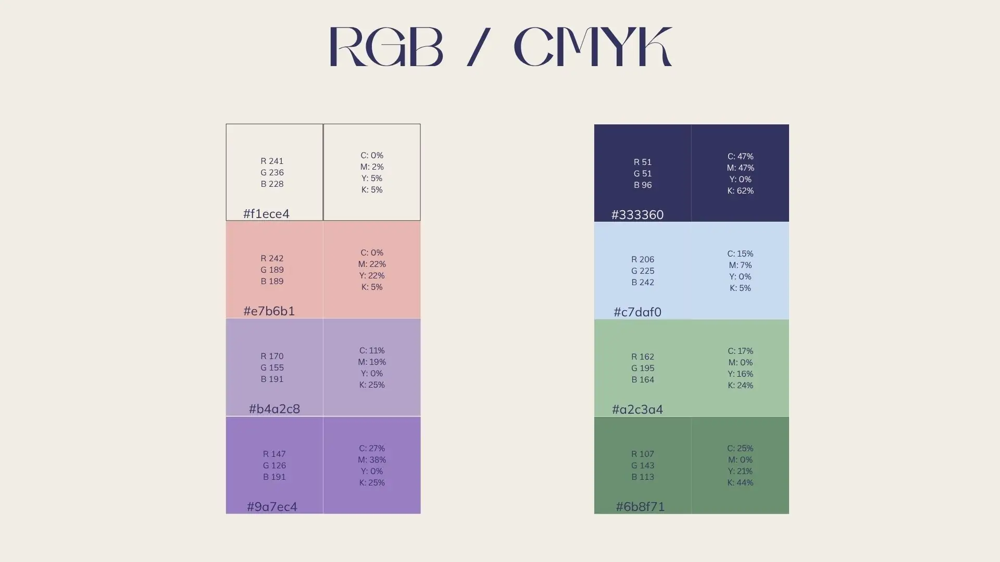
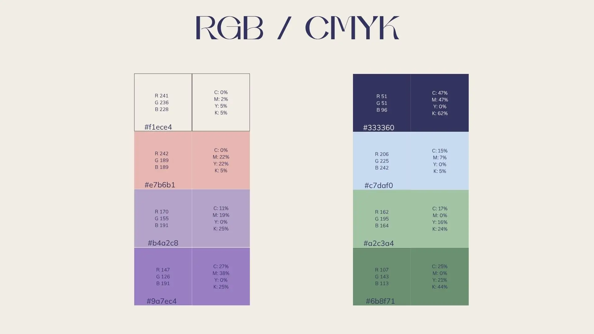

Luméa
Visão Geral do Projeto
Luméa é uma marca conceitual que celebra o bem-estar, a delicadeza e a conexão com os sentidos. Inspirada pela natureza, formas orgânicas e uma estética suave, o projeto propõe uma experiência visual serena, com uma paleta de cores neutras e tipografia refinada. O objetivo é traduzir leveza e autenticidade, criando uma identidade visual equilibrada, elegante e acolhedora.
O Desafio e a Solução
Desafio: Criar uma identidade visual desde o inicio, assim que eu decidi que tipo de
marca
eu queria criar trabalhei para que a marca transmitisse um ar delicado e aromas, além disso que
apresentasse uma mistura do digital (loja) com criatividade.
Solução:Através de uma paleta de cores suaves e naturais, formas inspiradas na botânica (como o lírio-do-vale) e uma tipografia refinada, desenvolveu-se uma linguagem visual coesa e memorável. O logotipo minimalista e orgânico reflete os valores da marca, enquanto o layout e os elementos gráficos reforçam a experiência serena e elegante que Luméa pretende proporcionar.

Legenda: Um wireframe inicial mostrando a estrutura da interface e a navegação proposta.
Processo de Design
O desenvolvimento da identidade da Luméa passou por cinco etapas principais: pesquisa de referências e público-alvo, definição do conceito visual, criação de propostas (logotipo, paleta e tipografia), testes de aplicação e refinamento final. Cada decisão foi validada com base na coerência com os valores da marca, legibilidade e adaptabilidade em diferentes contextos.
 


Legenda: Exemplos de etapas do processo de design, desde o moodboard e testes de cor até o protótipo final.
Resultados e Aprendizados
O projeto resultou numa identidade visual coesa, versátil e alinhada com os valores da marca, recebendo feedback positivo pela leveza estética e equilíbrio entre o natural e o criativo. O maior aprendizado foi a importância de traduzir emoções e sensações em elementos visuais claros, reforçando o impacto do design no posicionamento de uma marca.